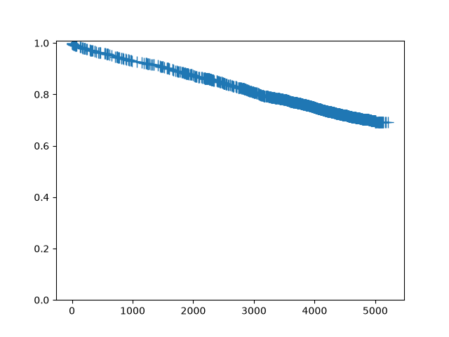
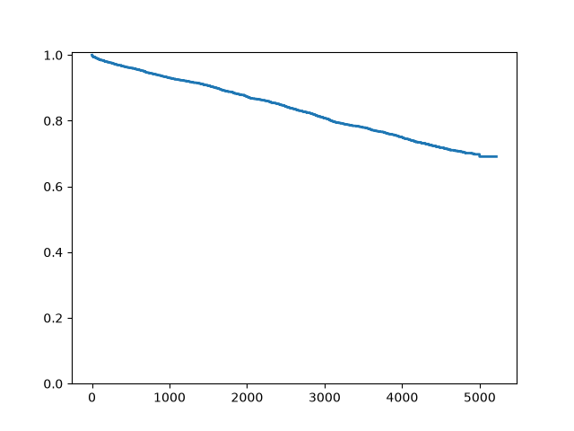
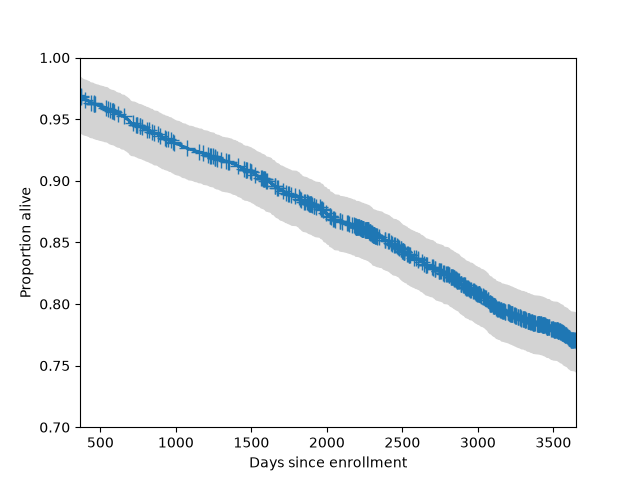
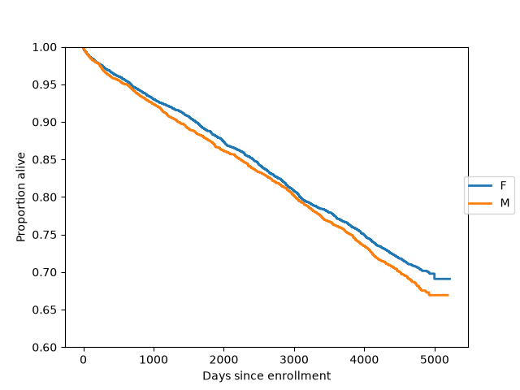

Methods for Survival and Duration Analysis#
statsmodels.duration implements several standard methods for
working with censored data. These methods are most commonly used when
the data consist of durations between an origin time point and the
time at which some event of interest occurred. A typical example is a
medical study in which the origin is the time at which a subject is
diagnosed with some condition, and the event of interest is death (or
disease progression, recovery, etc.).
Currently only right-censoring is handled. Right censoring occurs when we know that an event occurred after a given time t, but we do not know the exact event time.
Survival function estimation and inference#
The statsmodels.api.SurvfuncRight class can be used to
estimate a survival function using data that may be right censored.
SurvfuncRight implements several inference procedures including
confidence intervals for survival distribution quantiles, pointwise
and simultaneous confidence bands for the survival function, and
plotting procedures. The duration.survdiff function provides
testing procedures for comparing survival distributions.
Here we create a SurvfuncRight object using data from the
flchain study, which is available through the R datasets repository.
We fit the survival distribution only for the female subjects.
In [1]: import statsmodels.api as sm
In [2]: data = sm.datasets.get_rdataset("flchain", "survival").data
In [3]: df = data.loc[data.sex == "F", :]
In [4]: sf = sm.SurvfuncRight(df["futime"], df["death"])
The main features of the fitted survival distribution can be seen by
calling the summary method:
In [5]: sf.summary().head()
Out[5]:
Surv prob Surv prob SE num at risk num events
Time
0 0.999310 0.000398 4350 3.0
1 0.998851 0.000514 4347 2.0
2 0.998621 0.000563 4343 1.0
3 0.997931 0.000689 4342 3.0
4 0.997471 0.000762 4338 2.0
We can obtain point estimates and confidence intervals for quantiles of the survival distribution. Since only around 30% of the subjects died during this study, we can only estimate quantiles below the 0.3 probability point:
In [6]: sf.quantile(0.25)
Out[6]: np.int64(3995)
In [7]: sf.quantile_ci(0.25)
Out[7]: (np.int64(3776), np.int64(4166))
To plot a single survival function, call the plot method:
In [8]: sf.plot()
Out[8]: <Figure size 640x480 with 1 Axes>

Since this is a large dataset with a lot of censoring, we may wish to not plot the censoring symbols:
In [9]: fig = sf.plot()
In [10]: ax = fig.get_axes()[0]
In [11]: pt = ax.get_lines()[1]
In [12]: pt.set_visible(False)

We can also add a 95% simultaneous confidence band to the plot. Typically these bands only plotted for central part of the distribution.
In [13]: fig = sf.plot()
In [14]: lcb, ucb = sf.simultaneous_cb()
In [15]: ax = fig.get_axes()[0]
In [16]: ax.fill_between(sf.surv_times, lcb, ucb, color='lightgrey')
Out[16]: <matplotlib.collections.FillBetweenPolyCollection at 0x7f7a7ca0b0e0>
In [17]: ax.set_xlim(365, 365*10)
Out[17]: (365.0, 3650.0)
In [18]: ax.set_ylim(0.7, 1)
Out[18]: (0.7, 1.0)
In [19]: ax.set_ylabel("Proportion alive")
Out[19]: Text(0, 0.5, 'Proportion alive')
In [20]: ax.set_xlabel("Days since enrollment")
Out[20]: Text(0.5, 0, 'Days since enrollment')

Here we plot survival functions for two groups (females and males) on the same axes:
In [21]: import matplotlib.pyplot as plt
In [22]: gb = data.groupby("sex")
In [23]: ax = plt.axes()
In [24]: sexes = []
In [25]: for g in gb:
....: sexes.append(g[0])
....: sf = sm.SurvfuncRight(g[1]["futime"], g[1]["death"])
....: sf.plot(ax)
....:
In [26]: li = ax.get_lines()
In [27]: li[1].set_visible(False)
In [28]: li[3].set_visible(False)
In [29]: plt.figlegend((li[0], li[2]), sexes, loc="center right")
Out[29]: <matplotlib.legend.Legend at 0x7f7a7d4067b0>
In [30]: plt.ylim(0.6, 1)
Out[30]: (0.6, 1.0)
In [31]: ax.set_ylabel("Proportion alive")
Out[31]: Text(0, 0.5, 'Proportion alive')
In [32]: ax.set_xlabel("Days since enrollment")
Out[32]: Text(0.5, 0, 'Days since enrollment')

We can formally compare two survival distributions with survdiff,
which implements several standard nonparametric procedures. The
default procedure is the logrank test:
In [33]: stat, pv = sm.duration.survdiff(data.futime, data.death, data.sex)
Here are some of the other testing procedures implemented by survdiff:
# Fleming-Harrington with p=1, i.e. weight by pooled survival time
In [34]: stat, pv = sm.duration.survdiff(data.futime, data.death, data.sex, weight_type='fh', fh_p=1)
# Gehan-Breslow, weight by number at risk
In [35]: stat, pv = sm.duration.survdiff(data.futime, data.death, data.sex, weight_type='gb')
# Tarone-Ware, weight by the square root of the number at risk
In [36]: stat, pv = sm.duration.survdiff(data.futime, data.death, data.sex, weight_type='tw')
Regression methods#
Proportional hazard regression models (“Cox models”) are a regression technique for censored data. They allow variation in the time to an event to be explained in terms of covariates, similar to what is done in a linear or generalized linear regression model. These models express the covariate effects in terms of “hazard ratios”, meaning the the hazard (instantaneous event rate) is multiplied by a given factor depending on the value of the covariates.
In [37]: import statsmodels.api as sm
In [38]: import statsmodels.formula.api as smf
In [39]: data = sm.datasets.get_rdataset("flchain", "survival").data
In [40]: del data["chapter"]
In [41]: data = data.dropna()
In [42]: data["lam"] = data["lambda"]
In [43]: data["female"] = (data["sex"] == "F").astype(int)
In [44]: data["year"] = data["sample.yr"] - min(data["sample.yr"])
In [45]: status = data["death"].values
In [46]: mod = smf.phreg("futime ~ 0 + age + female + creatinine + np.sqrt(kappa) + np.sqrt(lam) + year + mgus", data, status=status, ties="efron")
In [47]: rslt = mod.fit()
In [48]: print(rslt.summary())
Results: PHReg
====================================================================
Model: PH Reg Sample size: 6524
Dependent variable: futime Num. events: 1962
Ties: Efron
--------------------------------------------------------------------
log HR log HR SE HR t P>|t| [0.025 0.975]
--------------------------------------------------------------------
age 0.1012 0.0025 1.1065 40.9289 0.0000 1.1012 1.1119
female -0.2817 0.0474 0.7545 -5.9368 0.0000 0.6875 0.8280
creatinine 0.0134 0.0411 1.0135 0.3271 0.7436 0.9351 1.0985
np.sqrt(kappa) 0.4047 0.1147 1.4988 3.5288 0.0004 1.1971 1.8766
np.sqrt(lam) 0.7046 0.1117 2.0230 6.3056 0.0000 1.6251 2.5183
year 0.0477 0.0192 1.0489 2.4902 0.0128 1.0102 1.0890
mgus 0.3160 0.2532 1.3717 1.2479 0.2121 0.8350 2.2532
====================================================================
Confidence intervals are for the hazard ratios
See Examples for more detailed examples.
There are some notebook examples on the Wiki: Wiki notebooks for PHReg and Survival Analysis
References#
References for Cox proportional hazards regression model:
T Therneau (1996). Extending the Cox model. Technical report.
http://www.mayo.edu/research/documents/biostat-58pdf/DOC-10027288
G Rodriguez (2005). Non-parametric estimation in survival models.
http://data.princeton.edu/pop509/NonParametricSurvival.pdf
B Gillespie (2006). Checking the assumptions in the Cox proportional
hazards model.
http://www.mwsug.org/proceedings/2006/stats/MWSUG-2006-SD08.pdf
Module Reference#
The class for working with survival distributions is:
|
Estimation and inference for a survival function. |
The proportional hazards regression model class is:
|
Cox Proportional Hazards Regression Model |
The proportional hazards regression result class is:
|
Class to contain results of fitting a Cox proportional hazards survival model. |
The primary helper class is:
|
A class representing a collection of discrete distributions. |